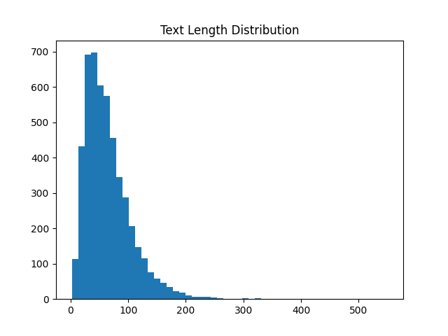

Exploratory Data Analysis
Insight 1

Label Distribution
Heavy imbalance in "Incorrect" class requires balanced weighting in the loss function.
Insight 2
Answer Length Variance

Longer answers correlate with higher correctness likelihood, acting as a secondary signal of student effort.
Insight 3

Feature Interaction
Verifying the orthogonality of engineered features to ensure predictive stability.
Insight 4

The Semantic Manifold
PCA projection demonstrates clear clustering patterns in the 5D feature space, justifying our linear model.